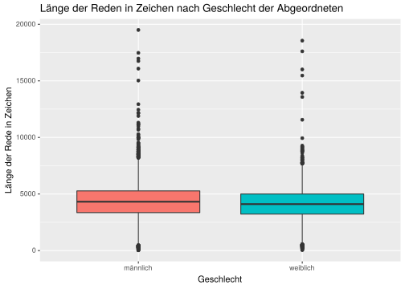
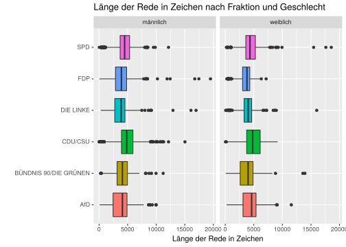
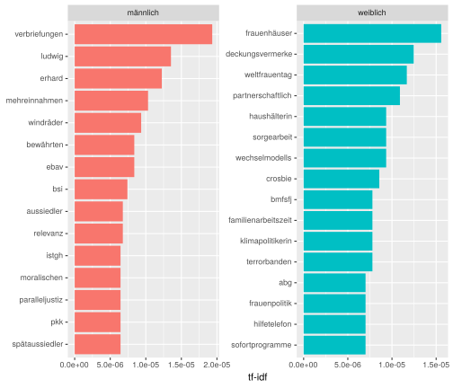
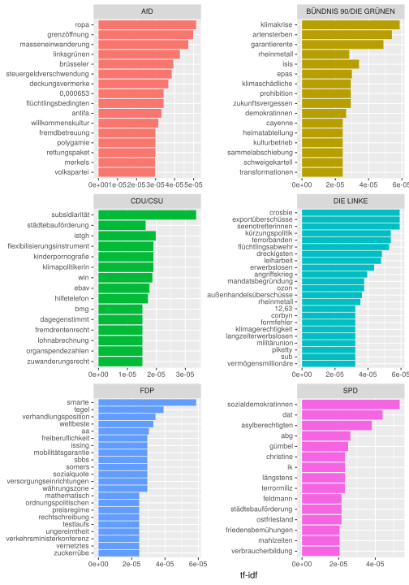

Kapitel 4 Auswertung
Nachdem alle Daten abgerufen wurden, können wir uns endlich an die Auswertung machen. Zunächst, wie hoch ist der Frauenanteil nach den einzelnen Fraktionen?
data_mdb %>%
unnest() %>%
filter(wahlperioden == 19) %>%
group_by(geschlecht, partei) %>%
summarise(n = n()) %>%
group_by(partei) %>%
mutate(freq = n/sum(n)) %>%
filter(geschlecht == "weiblich") %>%
arrange(-freq) %>%
mutate(freq = scales::percent(freq)) %>%
select(-geschlecht)## # A tibble: 8 x 3
## # Groups: partei [8]
## partei n freq
## <chr> <int> <chr>
## 1 BÜNDNIS 90/DIE GRÜNEN 39 58.2%
## 2 DIE LINKE. 37 53.6%
## 3 Blaue 1 50.0%
## 4 SPD 65 41.9%
## 5 FDP 19 23.7%
## 6 CDU 41 20.5%
## 7 CSU 8 17.4%
## 8 AfD 10 10.9%Wie hoch ist der Anteil an Reden von Frauen im Bundestag?
data_mdb %>%
unnest() %>%
filter(wahlperioden == 19) %>%
select(-geburtsjahr, -anzahl_wahlperioden, -wahlperioden) %>%
left_join(prot_overview, by = c("id" = "redner_id")) %>%
group_by(geschlecht) %>%
summarise(n = n()) %>%
mutate(freq = n/sum(n)) %>%
mutate(freq = scales::percent(freq))## # A tibble: 2 x 3
## geschlecht n freq
## <chr> <int> <chr>
## 1 männlich 3894 68.8%
## 2 weiblich 1765 31.2%Überraschenderweise höher als der Anteil an weiblichen Abgeordneten. Wie sieht es für die einzelnen Parteien an. Untersuchen wir den Anteil an Reden von Frauen.
data_mdb %>%
unnest() %>%
filter(wahlperioden == 19) %>%
select(-geburtsjahr, -anzahl_wahlperioden, -wahlperioden) %>%
left_join(prot_overview, by = c("id" = "redner_id")) %>%
group_by(geschlecht, redner_fraktion) %>%
summarise(n = n()) %>%
group_by(redner_fraktion) %>%
mutate(freq = n/sum(n)) %>%
filter(geschlecht == "weiblich") %>%
arrange(-freq) %>%
mutate(freq = scales::percent(freq))## # A tibble: 8 x 4
## # Groups: redner_fraktion [8]
## geschlecht redner_fraktion n freq
## <chr> <chr> <int> <chr>
## 1 weiblich BÜNDNIS 90/DIE GRÜNEN 407 61.4%
## 2 weiblich fraktionslos 35 55.6%
## 3 weiblich DIE LINKE 304 50.2%
## 4 weiblich SPD 367 38.5%
## 5 weiblich <NA> 202 36.4%
## 6 weiblich FDP 167 24.5%
## 7 weiblich CDU/CSU 202 14.9%
## 8 weiblich AfD 81 10.3%Der Anteil an Reden von Frauen ist sowohl bei der SPD, der CDU/CSU, den Linken und auch der AfD niedriger als der Anteil an weiblichen Abgeordneten. Besonders deutlich fällt dies aber bei der Fraktion CDU/CSU aus. Bei der Fraktion der Grünen ist der Anteil an Reden von Frauen hingegen sogar noch höher als der Anteil an weiblichen Abgeordneten.
Die keiner Fraktion zugeordneten Reden stammen vor allem von Regierungsmitgliedern. Nur bei Regierungsmitgliedern mit einem Mandat für den Bundestag kann ein Geschlecht zugeordnet werden – der Anteil an Reden weiblicher Regierungsmitglieder fällt somit wohmöglich höher aus.
Der überraschend hohe Anteil an Reden weiblicher Abgeordneter bei den Fraktionslosen abgeordneten geht auf Frauke Petry zurück, welche besonders häufig am Podium des Bundestags zu sehen ist – siehe 3.1.
4.1 Länge der Reden
Wir können nun auch die Reden der Politiker_innen anaysieren. Etwa, indem wir die durchschnittliche Länge (in Zeichen) zwischen Männern und frauen vergleichen.
avg_rede_leange <- data_mdb %>%
unnest() %>%
select(-geburtsjahr, -anzahl_wahlperioden) %>%
filter(wahlperioden == 19) %>%
left_join(prot_overview, by = c("id" = "redner_id")) %>%
left_join(prot_speeches, by = c("rede_id")) %>%
filter(präsidium == FALSE) %>%
filter(typ != "kommentar") %>%
filter(!is.na(redner_fraktion)) %>%
filter(id.x == id.y) %>%
mutate(rede_laenge = nchar(rede)) %>%
group_by(geschlecht, rede_id) %>%
rename(Geschlecht = geschlecht) %>%
summarise(rede_laenge = sum(rede_laenge))
ggplot(avg_rede_leange, aes(x = Geschlecht, y = rede_laenge, fill = Geschlecht)) +
geom_boxplot() +
labs(title = "Länge der Reden in Zeichen nach Geschlecht der Abgeordneten",
x = "Geschlecht", y = "Länge der Rede in Zeichen") +
guides(fill = FALSE) 
Wir sehen, dass Frauen durchscnittlich eine etwas geringere Redezeit aufweisen als Männer. Die tatsächliche Redezeit konnte allerdings nicht bestimmt werden, wir nähern uns durch die Anzahl der Zeichen in der Rede an einen solchen Wert an. Die Abweichung zwischen den Redezeiten erscheint jedoch marginal. Hier könnte noch zwischen den Fraktionen unterschieden werden. Wir vergleichen die Redezeiten von Frauen nach Fraktion:
data_mdb %>%
unnest() %>%
select(-geburtsjahr, -anzahl_wahlperioden) %>%
filter(wahlperioden == 19) %>%
left_join(prot_overview, by = c("id" = "redner_id")) %>%
left_join(prot_speeches, by = c("rede_id")) %>%
filter(präsidium == FALSE) %>%
filter(typ != "kommentar") %>%
filter(!is.na(redner_fraktion)) %>%
filter(redner_fraktion != "fraktionslos") %>%
filter(id.x == id.y) %>%
mutate(rede_laenge = nchar(rede)) %>%
group_by(geschlecht, rede_id, redner_fraktion) %>%
rename(Geschlecht = geschlecht, Fraktion = redner_fraktion) %>%
summarise(rede_laenge = sum(rede_laenge)) %>%
ggplot(aes(x = Fraktion, y = rede_laenge, fill = Fraktion)) +
geom_boxplot() +
facet_wrap(~Geschlecht) +
labs(title = "Länge der Rede in Zeichen nach Fraktion und Geschlecht",
y = "Länge der Rede in Zeichen", x = "") +
coord_flip() +
guides(fill = FALSE)
Hier sind kaum Unterschiede zwischen den verschiedenen Fraktionen festzustellen. (DIE FARBEN WERDEN NOCH AN DIE FRAKTIONEN ANGEPASST). Als nächstes stehen die Inhalte der Reden an.
4.2 Inhalte der Reden
Wenn wir nach besonders häufigen Wörtern suchen würden, würden wir nur auf Stopwörter stoßen (der, die, das, ich, bin, …). Das wäre wenig gewinnbringend. Wir suchen deshalb nach Wörtern, welche häufiger vorkommen, aber nicht zu häufig – und sich zwischen den Gruppen besonders unterscheiden. Wir greifen hierbei auf die Term Frequency and Inverse Document Frequency (tf-idf) Berechnung (Ramos 2003). HIER KOMMT NOCH DIE ERKLÄRUNG VON TF-IDF UND WIESO ES BEI ZWEI GRUPPEN (BZW. DOKUMENTEN) EHER NICHT GEEIGNET IST.
library(tidytext)
speech_gender_words <- data_mdb %>%
unnest() %>%
select(-geburtsjahr, -anzahl_wahlperioden) %>%
filter(wahlperioden == 19) %>%
left_join(prot_overview, by = c("id" = "redner_id")) %>%
left_join(prot_speeches, by = c("rede_id")) %>%
filter(präsidium == FALSE) %>%
filter(typ != "kommentar") %>%
filter(!is.na(redner_fraktion)) %>%
filter(redner_fraktion != "fraktionslos") %>%
filter(id.x == id.y) %>%
group_by(geschlecht) %>%
summarise(rede = paste(rede, collapse = " ")) %>%
ungroup() %>%
unnest_tokens(word, rede) %>%
count(geschlecht, word, sort = TRUE)
speech_total_words <- speech_gender_words %>%
group_by(geschlecht) %>% summarize(total = sum(n))
speech_gender_words %>%
left_join(speech_total_words, by = "geschlecht") %>%
bind_tf_idf(word, geschlecht, n) %>%
arrange(-tf_idf) %>%
mutate(word = factor(word, levels = rev(unique(word)))) %>%
group_by(geschlecht) %>%
top_n(15) %>%
ungroup() %>%
ggplot(aes(word, tf_idf, fill = geschlecht)) +
geom_col(show.legend = FALSE) +
labs(x = NULL, y = "tf-idf") +
facet_wrap(~geschlecht, ncol = 2, scales = "free") +
coord_flip()
Wir können tf-idf natürlich auch auf die Fraktionen anwenden:
speech_fraktion_words <- data_mdb %>%
unnest() %>%
select(-geburtsjahr, -anzahl_wahlperioden) %>%
filter(wahlperioden == 19) %>%
left_join(prot_overview, by = c("id" = "redner_id")) %>%
left_join(prot_speeches, by = c("rede_id")) %>%
filter(präsidium == FALSE) %>%
filter(typ != "kommentar") %>%
filter(!is.na(redner_fraktion)) %>%
filter(redner_fraktion != "fraktionslos") %>%
filter(id.x == id.y) %>%
group_by(redner_fraktion) %>%
summarise(rede = paste(rede, collapse = " ")) %>%
ungroup() %>%
unnest_tokens(word, rede) %>%
count(redner_fraktion, word, sort = TRUE)
fraktion_total_words <- speech_fraktion_words %>%
group_by(redner_fraktion) %>% summarize(total = sum(n))
speech_fraktion_words %>%
left_join(fraktion_total_words, by = "redner_fraktion") %>%
bind_tf_idf(word, redner_fraktion, n) %>%
arrange(-tf_idf) %>%
mutate(word = factor(word, levels = rev(unique(word)))) %>%
group_by(redner_fraktion) %>%
top_n(15) %>%
ungroup() %>%
ggplot(aes(word, tf_idf, fill = redner_fraktion)) +
geom_col(show.legend = FALSE) +
labs(x = NULL, y = "tf-idf") +
facet_wrap(~redner_fraktion, ncol = 2, scales = "free") +
coord_flip()
WIRD NOCH VERVOLLSTÄNDIGT
Literatur- und Quellverzeichnis
Ramos, Juan Enrique (2003): Using TF-IDF to Determine Word Relevance in Document Queries. Präsentiert auf: 2003,